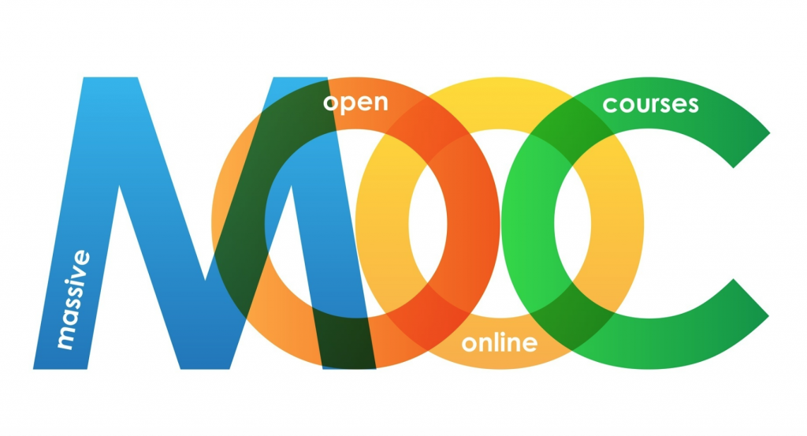

5.6 Por que os MOOCs são apenas parte da resposta

5.6.1 A importância do contexto e do design
Sou frequentemente rotulado como um grande crítico dos MOOCs, o que é surpreendente, uma vez que sou um defensor de longa data da aprendizagem on-line. De fato, considero os MOOCs um desenvolvimento importante e que, em determinadas circunstâncias, podem ter um valor tremendo na educação.
Mas, como sempre, o contexto é fundamental. Não existe um único mercado e uma única necessidade de educação, mas sim muitos. Um estudante que conclui o ensino médio aos dezoito anos tem necessidades muito diferentes e quererá aprender em um contexto muito diferente daquele de um engenheiro empregado de 35 anos com família que necessita de formação em gestão. Do mesmo modo, um homem de 65 anos que luta para lidar com a doença de Alzheimer precoce de sua esposa e está desesperado por ajuda encontra-se em uma situação totalmente diferente da do estudante do ensino médio ou da do engenheiro. Ao desenhar programas educacionais, deve-se adequar a solução a cada necessidade (horses for courses). Não existe uma resposta única ou uma bala de prata para cada um destes vários contextos.
Em segundo lugar, como em todas as formas de educação, a forma como os MOOCs são planejados importa muito. Se forem concebidos de forma inadequada, no sentido de não desenvolverem os conhecimentos e competências necessários a um determinado aprendiz em um determinado contexto, terão pouco ou nenhum valor para esse estudante. Contudo, planejados de forma diferente, um MOOC pode muito bem responder às necessidades do aprendiz.
5.6.2 As limitações dos xMOOCs
A verdadeira ameaça dos xMOOCs recai sobre as turmas presenciais muito grandes que se encontram em muitas universidades ao nível da graduação. Os MOOCs constituem uma forma mais eficaz de substituir tais aulas expositivas presenciais. São mais interativos e permanentes, pelo que os estudantes podem rever os materiais várias vezes. Tenho ouvido professores de MOOCs argumentarem que os seus MOOCs são melhores do que as suas aulas presenciais ordinárias, uma vez que dedicam mais cuidado e esforço a eles.
No entanto, devemos questionar por que razão continuamos a ensinar desta forma no campus. Os conteúdos estão agora disponíveis gratuitamente em qualquer ponto da internet — incluindo nos MOOCs. O que se exige é a gestão da informação: como identificar os conhecimentos de que necessitamos, como avaliá-los e como aplicá-los. Os xMOOCs não fazem isso: pré-selecionam e empacotam a informação. A minha grande preocupação com os xMOOCs reside na sua limitação, na forma como são estruturados atualmente, para desenvolver as competências intelectuais de nível superior necessárias em um mundo digital. Infelizmente, os xMOOCs estão adotando o modelo de design menos adequado para o desenvolvimento das competências do século XXI a partir do ensino presencial e transferindo este modelo de design inadequado para o ambiente on-line. O simples fato de as aulas provirem de universidades de elite não significa necessariamente que os estudantes desenvolverão competências intelectuais de alto nível, embora o conteúdo seja da mais elevada qualidade. Mais importante ainda, com os MOOCs, relativamente poucos estudantes obtêm sucesso em termos de avaliação, e aqueles que o fazem são testados principalmente na compreensão e na aplicação limitada de conhecimentos.
Podemos fazer e temos feito muito melhor em termos de competências para a era digital com outras abordagens pedagógicas, tanto no campus (como a aprendizagem baseada em problemas ou em investigação) como on-line, utilizando abordagens mais construtivistas em cursos valendo créditos (como a aprendizagem colaborativa on-line). Contudo, estes métodos alternativos às aulas expositivas tradicionais não são tão facilmente escaláveis. A interação entre um especialista e um novato continua a ser crítica para o desenvolvimento de uma compreensão profunda, de uma aprendizagem transformadora que resulte em o estudante ver o mundo de forma diferente, e para o desenvolvimento de níveis elevados de pensamento crítico baseado em evidências, avaliação de alternativas complexas e tomada de decisões de alto nível. A tecnologia informática até à data tem-se revelado extremamente deficiente em permitir o desenvolvimento deste tipo de aprendizagem. É por esta razão que o ensino presencial e on-line valendo créditos continua a visar uma relação professor-estudante relativamente baixa e necessita ainda de se centrar fortemente na interação entre o professor e os estudantes.
No entanto, os xMOOCs são valiosos como forma de educação continuada ou como fonte de materiais educativos abertos que podem fazer parte de uma oferta educativa mais ampla. Podem ser um complemento valioso para o ensino presencial. Contudo, não substituem o ensino convencional nem o design atual dos programas on-line valendo créditos. Como modalidade de educação continuada, as baixas taxas de conclusão e a falta de créditos formais não assumem grande relevância. Contudo, as taxas de conclusão e a avaliação de qualidade importam, sim, se os MOOCs forem vistos como substitutos ou alternativas para a educação formal, inclusive para as aulas expositivas presenciais.
5.6.3 Comprometendo o sistema público de ensino superior?
O verdadeiro perigo é que os xMOOCs possam ser utilizados para comprometer o que é reconhecidamente um sistema público de ensino superior dispendioso. Se as universidades de elite conseguem oferecer MOOCs gratuitamente, por que razão necessitamos de universidades públicas estaduais de custo elevado e de menor prestígio? O risco é o de um sistema dividido em dois níveis, com um número relativamente pequeno de universidades de elite presenciais servindo os ricos e privilegiados e desenvolvendo os conhecimentos e competências que trarão elevadas recompensas, e as massas recebendo disciplinas ministradas por xMOOCs, com as universidades estaduais fornecendo um suporte mínimo e de baixo custo para esses cursos. Isto constituiria um desastre social e econômico, porque falharia na formação de um número suficiente de estudantes com as competências de alto nível que serão necessárias para obter bons empregos nos próximos anos — a menos que se acredite que a automação eliminará todos os empregos decentemente remunerados, com exceção de uma pequena elite (como nos Jogos Vorazes).
Os conteúdos representam menos de 15% do custo total ao longo de cinco anos nos programas on-line valendo créditos; a maior parte das verbas necessárias para assegurar resultados de alta qualidade e elevadas taxas de conclusão é gasta no suporte aos estudantes, proporcionando a aprendizagem que mais importa. O tipo de MOOCs promovido pelos políticos e pela mídia falha clamorosamente nesse aspecto. Precisamos ter cuidado para que o movimento da educação aberta, em geral, e os MOOCs, em particular, não sejam utilizados como um instrumento de coerção por parte de quem, nos Estados Unidos e noutros países, tenta deliberadamente comprometer o ensino público por razões ideológicas e comerciais. Por si só, os conteúdos abertos, os REAs e os MOOCs não conduzem automaticamente ao acesso aberto a credenciais de alta qualidade para todos. No final, um sistema de ensino superior público bem financiado continua a ser a melhor forma de garantir o acesso de todos ao ensino superior.
5.6.4 O potencial dos cMOOCs
Os cMOOCs apresentam o maior potencial, uma vez que a aprendizagem ao longo da vida se tornará cada vez mais importante, e o poder de reunir uma mistura de pessoas já bem instruídas e informadas de todo o mundo para trabalhar com outros estudantes empenhados e entusiastas em problemas comuns ou áreas de interesse mútuo poderia verdadeiramente revolucionar não apenas a educação, mas o mundo em geral.
No entanto, os cMOOCs atualmente são incapazes de o fazer, porque carecem de organização e não aplicam o que já se sabe sobre a melhor forma de funcionamento dos grupos on-line. No entanto, uma vez aprendidas e aplicadas estas lições, os cMOOCs podem constituir uma ferramenta formidável para enfrentar alguns dos grandes desafios que se nos colocam nas áreas da saúde global, das alterações climáticas, dos direitos civis e de outros "projetos civis relevantes". A beleza dos cMOOCs reside no fato de cada participante ter o poder de definir e resolver os problemas que estão sendo enfrentados.
O Cenário F que encerra este capítulo é um exemplo de como os cMOOCs poderiam ser utilizados para esses "projetos civis relevantes". No Cenário F, o MOOC não constitui um substituto para a educação formal, mas sim um foguete que necessita da educação formal como plataforma de lançamento. Por trás deste MOOC encontram-se os recursos de uma instituição muito forte, que fornece o impulso inicial, um software simples de utilizar, a estrutura geral, a organização e a coordenação no âmbito do MOOC, bem como alguns recursos humanos essenciais para apoiar o MOOC em funcionamento. Ao mesmo tempo, não tem de ser uma instituição educativa. Poderia ser uma autoridade de saúde pública, uma organização de radiodifusão, uma instituição de solidariedade social internacional ou um consórcio de organizações com um interesse comum. Existe também, naturalmente, o perigo de os próprios cMOOCs virem a ser manipulados por interesses corporativos ou governamentais.
5.6.5 Conclusão
Dito isto, existe uma enorme margem para melhorias no âmbito do sistema público de ensino superior. Os MOOCs, a educação aberta e as novas mídias oferecem caminhos promissores para introduzir melhorias muito necessárias. O Cenário F (a seguir) é uma das vias possíveis pelas quais os MOOCs poderiam trazer mudanças sociais fundamentais.
No entanto, os MOOCs devem assentar no que já sabemos a partir da utilização da aprendizagem on-line valendo créditos, da experiência anterior no ensino aberto e a distância e da concepção de disciplinas e programas em uma variedade de formas adequadas à vasta gama de necessidades de aprendizagem. Os MOOCs podem constituir uma parte importante desse ambiente, mas não um substituto para outras formas de oferta educativa que respondam a necessidades diferentes.
Atividade 5.6: Traçando estratégias sobre os MOOCs
Você é o Pró-Reitor Acadêmico de uma universidade de pesquisa de médio porte, que se encontra sob pressão financeira. O Reitor foi solicitado pelo Conselho Universitário a apresentar uma estratégia de inovação no ensino e na aprendizagem, enfrentando a universidade um corte de cerca de 5% no orçamento de funcionamento do próximo ano.
Um membro influente do Conselho está fazendo forte pressão para que a universidade desenvolva MOOCs como solução para a crise econômica.
O Reitor solicitou-lhe um relatório de orientação para o Conselho sobre qual deverá ser a estratégia da universidade em relação aos MOOCs e de que forma estes se enquadrariam na estratégia geral de ensino e aprendizagem. Como você responderia?
Dado que existem muitos argumentos a favor e contra os MOOCs, não vou apresentar feedback direto sobre esta atividade, uma vez que a "melhor" orientação terá em conta os contextos locais, tais como a oferta on-line existente de cursos regulares valendo créditos, o suporte de tecnologia de aprendizagem e os objetivos de matrícula, por exemplo.
Capítulo 5: Pontos-chave
1. Os MOOCs estão forçando todas as instituições de ensino superior a refletir cuidadosamente sobre a sua estratégia de ensino on-line e sobre a sua abordagem à educação aberta.
2. Os MOOCs não são a única modalidade de ensino on-line nem de recursos educacionais abertos. É importante analisar os pontos fortes e fracos dos MOOCs no contexto geral do ensino on-line e da abertura.
3. Existem diferenças consideráveis no planejamento dos MOOCs, refletindo objetivos e filosofias diferentes.
4. Existem atualmente limitações estruturais importantes nos MOOCs para o desenvolvimento de uma aprendizagem profunda ou transformadora, ou para o desenvolvimento dos conhecimentos e competências de alto nível necessários em uma era digital.
5. Os MOOCs encontram-se ainda em um estágio de maturidade relativamente inicial. À medida que as suas forças e fraquezas se tornam mais claras, e à medida que a experiência na melhoria da sua concepção cresce, eles tendem a ocupar um nicho significativo no ambiente de aprendizagem do ensino superior.
6. Os MOOCs poderiam perfeitamente substituir algumas formas de ensino tradicional (como as turmas presenciais de grandes dimensões). Contudo, é mais provável que os MOOCs continuem a ser um complemento ou uma alternativa importante a outros métodos de ensino convencionais. Não constituem, por si só, uma solução para o custo elevado do ensino superior, embora os MOOCs continuem a ser um fator importante de indução de mudanças.
7. Talvez o maior valor dos MOOCs no futuro resida em fornecer um meio para enfrentar grandes problemas globais através da ação comunitária.
5.6.6 A seguir
Conclui-se assim a discussão sobre os diferentes modelos de design para o ensino e a aprendizagem. O próximo capítulo analisa a importância da construção de um ambiente de aprendizagem eficaz no qual estes diferentes modelos de design possam funcionar da melhor forma.
Mas antes, o Cenário F, que antevê o que os MOOCs poderiam vir a ser no futuro.